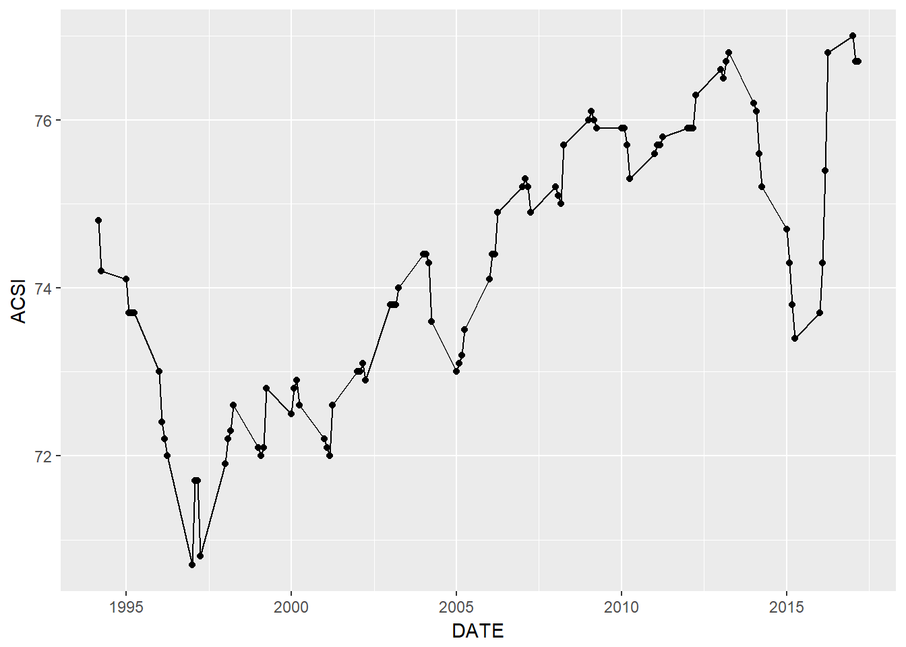
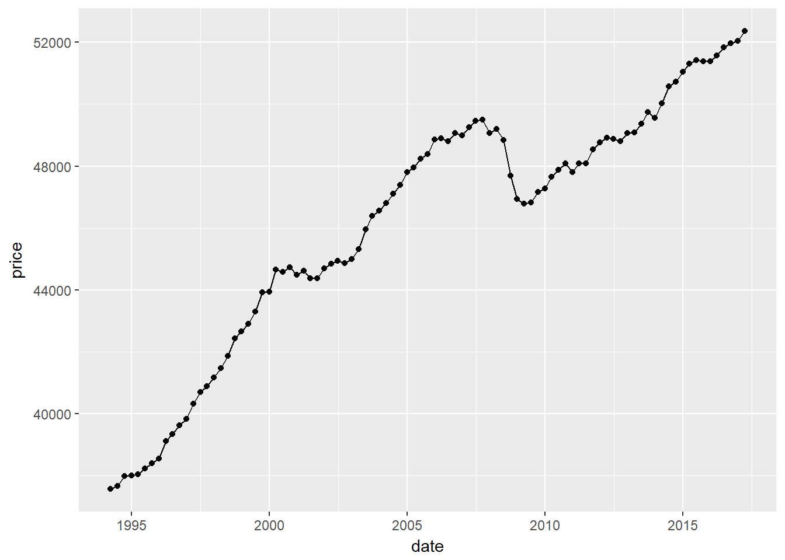
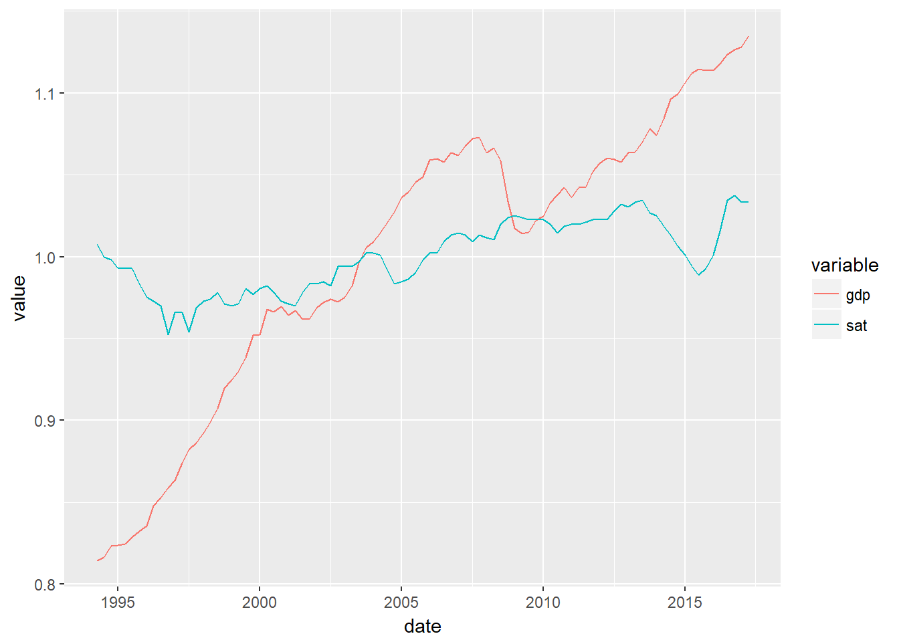
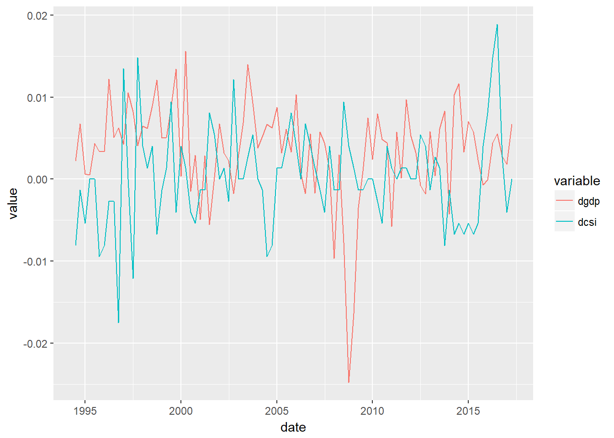

Exploring the drivers of Customer Satisfaction Indices
Introduction
Customer Satisfaction Indices are a popular a metric in Marketing and Business. They even appear in the financial reports of some companies. The idea behind Customer Satisfaction is that if customers like a product or service, they are satisfied and willing to keep doing business with the firm providing it. Furthermore, happy customers refer their friends and family, which results in more sales for the company.
Customer satisfaction the phenomenon, the latent variable, sounds like a very reasonable mechanism to explain consumer behavior. It also sounds very similar to the way Economists use the word Utility.
However, as a candidate for a metric, a causal mechanism is required. Specifically, one must know how to increase or decrease Customer Satisfaction; what specific action. Further, we must know what reaction will cause increasing Customer Satisfaction have on the financial variables that are ultimately of importance.
In utility theory, this is quite straightforward because of the assumption of the homo-economicus. However, in Marketing and Business we must relax these assumptions. At the very least, we should examine that there is reason to believe a given causal mechanism holds.
This could be examined given a measure of customer Satisfaction, but that’s another problem since it is measured by taking the reports of respondents to a survey at face value. If people are reporting values for resons other than the performance of the company, then one needs to know that in order to avoid making decisions based on bad information.
In this document it is proposed that the Customer Satisfaction Indices are often poorly measured and driven mostly by variables out of the control of the company interested in them; mainly the demographics of the reposdent as a proxy for their general tendencies in the way they respond to questions like these, the state of the Economy and the Weather when the measurement was carried out.
The American Customer Satisfaction Index
The first analysis done by us in this regard used the American Satisfaction Index. The authors in fact identify a relationship between the U.S. Overall Customer Satisfaction Index, but they argue that the causality is that satisfaction causes economic progress.
To see this, let us download the U.S. Overall Customer Satisfaction (USOCS) file from (http://www.theacsi.org/images/stories/images/nationalquarterlyscores/acsi_national_scores-dec.xls). After “tidying” the data, we can replicate the following plot given by theacsi.org.
##Download the data
library(XML)
URL = "http://www.theacsi.org/national-economic-indicator/us-overall-customer-satisfaction"
tables = readHTMLTable(URL)
USCSI = as.data.frame(tables)
##Tidy the data
library(tidyverse)
# USCSI %>%
# rename(year = NULL.V1, Q1 = NULL.V2, Q2 = NULL.V3, Q3 = NULL.V4, Q4 = NULL.V5) %>%
# filter(year != "") %>%
## I could not manage to tidy the data in R, so i did it in excel.
library(readxl) #I could not manage to do it with dplyr.
USCSI <- read_excel("ACSI.xlsx")
## Plot Quick Plot
library(ggplot2)
qplot(DATE, ACSI, data = USCSI, geom = c("point", "line"))
Now, let us download the Real US GDP Per-Capita from the Federal Reserve Economic Database (FRED) and create a similar time plot for the same period.
library(tidyquant) #This package allows to call data directly from FRED.
gdp <- tq_get(x = "A939RX0Q048SBEA",get ="economic.data" , from = "1994-03-01", to = "2017-04-01")
qplot(x = date, y = price , data = gdp, geom = c("point","line"))
They obviously share a common trend, but the satisfaction index exhibits more volatility, apparently. Let’s combine them together such that we can better discern the correlation visually. (It happens that ggplot2 doesn’t like two axis plots, so I had to normalize these variables)
library(reshape2)
df <-
bind_cols(gdp,USCSI) %>%
select(date, price, sat = ACSI) %>%
mutate(gdp = as.numeric(price)) %>%
select(date, gdp, sat) %>%
mutate(gdp = gdp/mean(gdp), sat = sat/mean(sat)) %>%
melt(id = "date")
ggplot(df, aes(x = date, y = value, colour=variable)) + geom_line()
As you can see, they both tend to increase; although the trend for the Satisfaction Index is much milder. And, honestly, why should a variable limited at 100 have a stron trend? Still, any student of time series econometrics would tell you that this analysis is meaningless. In fact, even the people from the ACS did not do this, since the correlation of these two series is only 0.68.
cor(gdp$price, USCSI$ACSI)## [1] 0.6784285Most likely, they de-trended these series and evaluated their correlation So, let’s do that. There are several ways of de-trending a series. The simplest one is simply by taking first differences according to the following formula: \[\Delta y_t = y_t - y_{t-1}\]
df1 <-
bind_cols(gdp,USCSI) %>%
select(date, price, sat = ACSI) %>%
mutate(gdp = as.numeric(price)) %>%
select(date, gdp, sat) %>%
mutate(gdp = gdp/mean(gdp), sat = sat/mean(sat))
dgdp = as.data.frame(diff(df1$gdp,1))
dcsi = as.data.frame(diff(df1$sat,1))
Date = as.data.frame(df1$date[2:length(df1$date)])
df2 <- (cbind(Date,dgdp,dcsi)) %>%
select(date = 1, dgdp = 2, dcsi = 3) %>%
melt(id = 1)
ggplot(df2, aes(x = date, y = value, colour=variable)) + geom_line() There is a general common pattern between these two, but it isn’t really easy to appreciate visually. As indicated by their correlation of -0.19, it seems that the satisfaction rises when the economy is in a downturn. We will come back to this later.
cor(dgdp, dcsi)## diff(df1$sat, 1)
## diff(df1$gdp, 1) -0.1995605Another alternative is using a linear filter like the Hodrick Prescott filter. I won’t explain what it does, but will just use it instead.
library(mFilter)
hpgdp <- hpfilter(df1$gdp, type = "lambda", 1600)
hpcsi <- hpfilter(df1$sat, type = "lambda", 1600)
df3 <- cbind(as.data.frame(df1$date),as.data.frame(hpgdp$cycle),as.data.frame(hpcsi$cycle)) %>%
select(date = 1, hpgdp = 2, hpcsi = 3) %>%
melt(id = 1)
ggplot(df3, aes(x = date, y = value, colour=variable)) + geom_line() Here the opposite pattern is more visible. Still, let us calculate the correlation index and confirm that it is -0.16.
Here the opposite pattern is more visible. Still, let us calculate the correlation index and confirm that it is -0.16.
cor(hpgdp$cycle,hpcsi$cycle)## [1] -0.1634065The Survey
Apparently, there are many governments that are openning their data to the public driven by the need to be “open”. A quick google search for “Customer Satisfaction Dataset” gives several websites with datasets. We will use this data to examine the hypothesis at the cross-sectional level, instead of the time dimension.
I have found this data. The data and questionnaire can be found at https://www.europeandataportal.eu/data/en/dataset/civil-service-customer-satisfaction-survey-2015/resource/eec6afcd-88d2-460d-960e-ad68c621f4d4?inner_span=True
library(readxl)
library(tidyverse)
read_excel("CSC Survey.xlsx", sheet = 1)## # A tibble: 2,025 x 251
## iobs intno assno age c2 c3 c4 c5 c6 c7 c8a c8b
## <dbl> <dbl> <dbl> <dbl> <dbl> <dbl> <dbl> <dbl> <dbl> <dbl> <dbl> <dbl>
## 1 1 552 2212 9 1 2 2 10 2 1 1 1
## 2 2 552 2212 12 2 2 2 10 2 1 1 1
## 3 3 552 2212 1 1 1 4 10 2 1 1 1
## 4 4 552 2212 7 2 1 2 1 2 1 2 2
## 5 5 552 2212 6 2 2 2 3 2 3 1 1
## 6 6 552 2212 11 2 1 2 10 2 1 1 1
## 7 7 552 2212 12 1 1 2 10 2 1 1 1
## 8 8 552 2212 9 2 2 2 10 2 1 2 2
## 9 9 552 2212 5 2 1 2 10 2 1 1 1
## 10 10 552 2212 12 1 2 2 10 2 1 1 3
## # ... with 2,015 more rows, and 239 more variables: c8c <dbl>, c8d <dbl>,
## # c8e <dbl>, c8f <dbl>, c9 <dbl>, c9a <dbl>, c15 <dbl>, c16 <dbl>,
## # c16a <dbl>, c17 <dbl>, c18 <dbl>, c19_1 <dbl>, c19_2 <dbl>,
## # c19_3 <dbl>, c19_4 <dbl>, c19_5 <dbl>, c19_6 <dbl>, c19_7 <dbl>,
## # c20 <dbl>, q1aa <dbl>, q1ab <dbl>, q1ac <dbl>, q1ad <dbl>, q1ae <dbl>,
## # q1af <dbl>, q1ag <dbl>, q1ah <dbl>, q1ai <dbl>, q1aj <dbl>,
## # q1ak <dbl>, q1al <dbl>, q1am <dbl>, q1an <dbl>, q1ao <dbl>,
## # q1ap <dbl>, q1aq <dbl>, q1ar <dbl>, q1as <dbl>, q1at <dbl>,
## # q1au <dbl>, q1av <dbl>, q1aw <dbl>, q1ba <dbl>, q1bb <dbl>,
## # q1bc <dbl>, q1bd <dbl>, q1be <dbl>, q1bf <dbl>, q1bg <dbl>,
## # q1bh <dbl>, q1bi <dbl>, q1bj <dbl>, q1bk <dbl>, q1bl <dbl>,
## # q1bm <dbl>, q1bn <dbl>, q1bo <dbl>, q1bp <dbl>, q1bq <dbl>,
## # q1br <dbl>, q1bs <dbl>, q1bt <dbl>, q1bu <dbl>, q1bv <dbl>,
## # sq1c <dbl>, q2 <dbl>, q4a_1 <dbl>, q4a_2 <dbl>, q4a_3 <dbl>,
## # q4a_4 <dbl>, q4a_5 <dbl>, q4a_6 <dbl>, q4a_7 <dbl>, q4a_8 <dbl>,
## # q4a_9 <dbl>, q4a_10 <dbl>, q4a_11 <dbl>, q4b_1 <dbl>, q4b_2 <dbl>,
## # q4b_3 <dbl>, q4b_4 <dbl>, q4b_5 <dbl>, q4b_6 <dbl>, q4b_7 <dbl>,
## # q4b_8 <dbl>, q4b_9 <dbl>, q4b_10 <dbl>, q4b_11 <dbl>, q4c_1 <dbl>,
## # q4c_2 <dbl>, q4c_3 <dbl>, q4c_4 <dbl>, q4c_5 <dbl>, q4c_6 <dbl>,
## # q4c_7 <dbl>, q4c_8 <dbl>, q4c_9 <dbl>, q4c_10 <dbl>, q4c_11 <dbl>,
## # q4c_12 <dbl>, ...